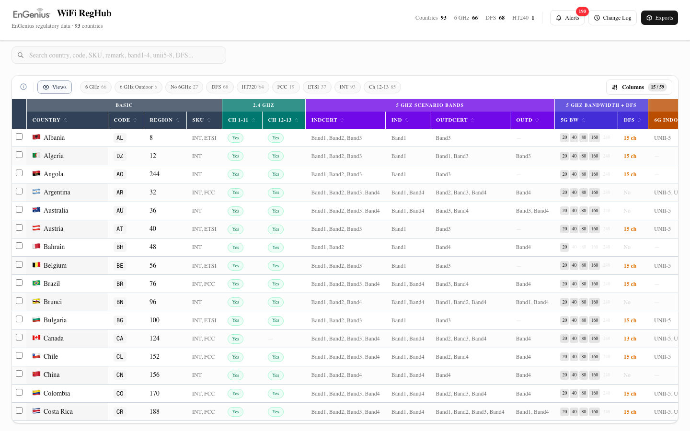

WiFi RegHub — AI 協作開發紀錄
WiFi RegHub 是 EnGenius 內部工具，取代 Excel 管理全球 93 國的 WiFi 法規資料。這次 session 把它從「能用」變成「好用」。
為什麼要做這件事
EnGenius 用一份 Excel（93 國 × 56 欄）管理各國 WiFi 法規。問題：
- 沒人知道資料對不對 — 很多國家的值是 2015 年填的，從來沒更新
- 沒有自動偵測法規變更的機制 — 完全靠 PM 手動追蹤
- 兩套 JSON 格式各自維護 — 前端和後台的 JSON 由不同腳本產出，有不一致
之前的 session 已經建了 MVP（Dashboard + Alert + Export）。這次要解決的是：UX 不好用、AI 解析不夠精確、缺後台 JSON 驗證、沒有視角管理。
最終樣貌
- 59 欄完整覆蓋 Excel 56 欄 + 3 個額外欄位
- 色帶分組表頭（7 種顏色，一眼看出 2.4G / 5G / 6G）
- 全欄位搜尋（打
UNII-5能搜到 6GHz outdoor 欄位） - Saved Views（儲存自訂欄位 + 篩選組合）
- Country Compare（勾選國家，差異黃色高亮）
- Frozen Country 欄 + DFS channel detail + Excel 一鍵匯出

- 5 種 alert type 各自有結構化 layout（不再是文字牆）
- AI 解析結果精確到 DB 欄位名（如
unii_outdoor→ UNII-5） - 上傳 PDF → AI 自動產出 Regulatory Brief（中文摘要 + 建議動作）

- 色帶排版（teal / blue / amber）跟 Dashboard 一致
- DFS channel detail 標註「auto from Band2 + Band3」
- 風險等級 badge + 官方 regulator 連結
- 三種格式：Excel (.xlsx) / Frontend JSON / Backend JSON
- JSON 驗證報告：前端 100% match、後台 99% match + 差異分析
系統架構
完整的資料流：
Manual Upload —————┐
Linux wireless-regdb —┤
CEPT/EFIS ———————├—→ Sync APIs —→ Parser
FCC eCFR ————————┤ (5 endpoints) (Structured or AI)
PolicyTracker RSS ——┘
↓
regulation_alerts
+ regulatory_briefs (auto-generated)
↓ ↓ ↓
Apply Approve Dismiss
↓ ↓
PATCH /api/regulations/[code]
↓
regulations 表更新 + change_log 自動記錄
↓ ↓ ↓
Frontend JSON Backend JSON Excel (.xlsx)
(countryInfo) (regular_domains)
技術選型
| 工具 / 技術 | 選的理由 |
|---|---|
| Next.js 16 + React 19 | App Router、server component 做 data fetching |
| Supabase (PostgreSQL) | 免費、有 API、SQL 彈性大 |
| TanStack Table v8 | 59 欄需要 column visibility、sorting、filtering |
| Tailwind CSS v4 | 快速迭代 UI，不用寫 CSS 檔 |
| Gemini 2.5 Flash | AI 解析法規文件，速度快、成本低 |
| unpdf | PDF 文字提取，Vercel serverless 相容 |
| ExcelJS | 產出 .xlsx 格式匹配原始 Excel |
| Vercel | Git push 自動部署 |
AI 怎麼幫我做的
分工：我負責需求和業務判斷，Claude 負責所有程式碼、UI 實作、文件撰寫。我幾乎不看 code，用截圖 + 一句話描述問題，Claude 定位並修復。
提問模式：截圖驅動 + 質疑式引導。我不說「把 padding 改成 16px」，而是說「這裡看起來很鬆」「欄位跟值距離太遠」。Claude 從視覺問題反推 CSS。
- 所有程式碼實作（前端 + API + DB schema）
- UI 視覺調整（從截圖反推 CSS）
- Gemini prompt 撰寫與調校
- JSON 驗證報告 + 差異分析
- 文件撰寫（監控策略、系統架構）
- 需求定義 + 優先排序
- 業務判斷（哪些欄位重要、RD 回饋）
- 截圖 + 質疑式 UI 回饋
- 外部資訊輸入（RD 的 email、Excel 原檔）
- 最終驗收
原本把 Chip Vendor SDK 定位成「Tier 0 — 最終決定者」。RD 回信說：
各國法規 channel/band 不是 SDK 定義的，而是 EnGenius 自行維護。
一句話直接改變了系統定位 — SDK 降級為 Manual Upload，Tier 0 移除，整個監控策略文件和前端都更新了。
把 35 個 DB 欄位定義塞進 Gemini 的 system prompt 後，AI 產出從「Ofcom authorized outdoor WiFi...」變成「unii_outdoor → UNII-5, 36 dBm, status: confirmed, action: update」。一樣的 PDF，完全不同的產出品質。
比對 5,369 個欄位後發現 31 個 diff — 不是我們的問題，是 RD 的 backend 腳本沒做 6GHz bonding 過濾 + DFS power 漏填。這變成了一份給 RD 的正式驗證報告。
踩到的坑
根本原因：pdf-parse v2 的 API 在 Vercel serverless 壞掉，fallback 把 PDF 二進位直接 .toString("utf8") → 亂碼
解法：換成 unpdf（pdf.js-based，serverless 相容）
根本原因：gemini-2.0-flash 被 Google deprecated，回 400
解法：升級到 gemini-2.5-flash + 增加 timeout 到 90 秒
根本原因：tooltip 用 absolute 定位但父元素有 overflow: hidden
解法：改成 click popover + fixed 定位
根本原因：renderer 檢查 type === "amendment" 但 eCFR sync 存的是 "section"
解法：改成兩個都 match
Takeaway
不需要看 code，不需要說 CSS 術語。截圖 + 「這裡很怪」就夠了。這讓非工程師也能深度參與產品設計。
最明顯的例子：同一份 PDF，舊 prompt 產出無用的文字，新 prompt（含 DB schema）產出精確到欄位的建議。把 schema 給 AI = 讓它知道「答案要長什麼樣」。
Saved Views 的討論可以花一小時，但直接做一個 localStorage 版本只要 20 分鐘。AI 讓 prototype 的成本趨近於零。
- 「我的 DB 有這些欄位 [貼 schema]，幫我寫一個 AI prompt 讓 LLM 解析文件時能對應到這些欄位」
- 「這是我的 Dashboard 截圖 [貼圖]，資訊層級哪裡不清楚？怎麼改？」
開發日期：2026-04-09 ~ 2026-04-10